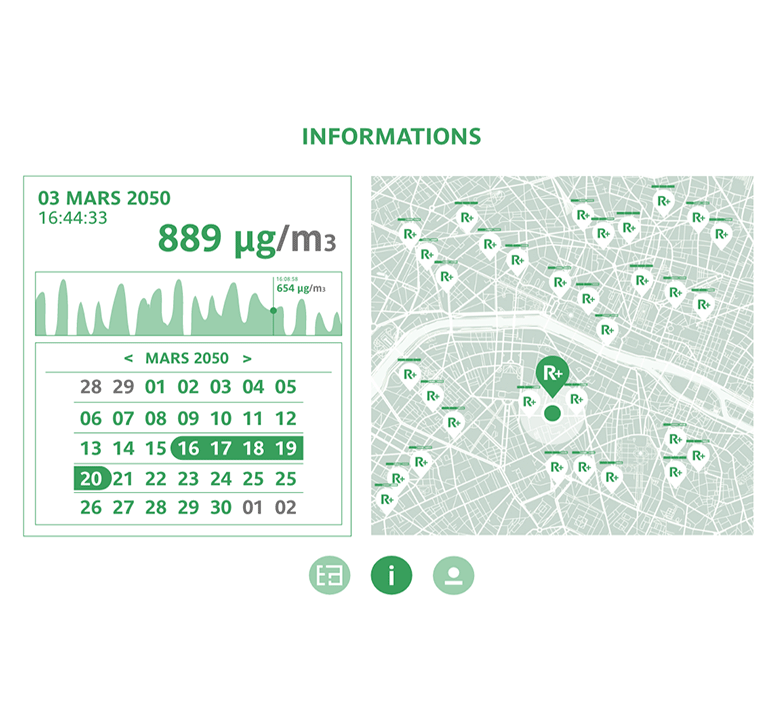
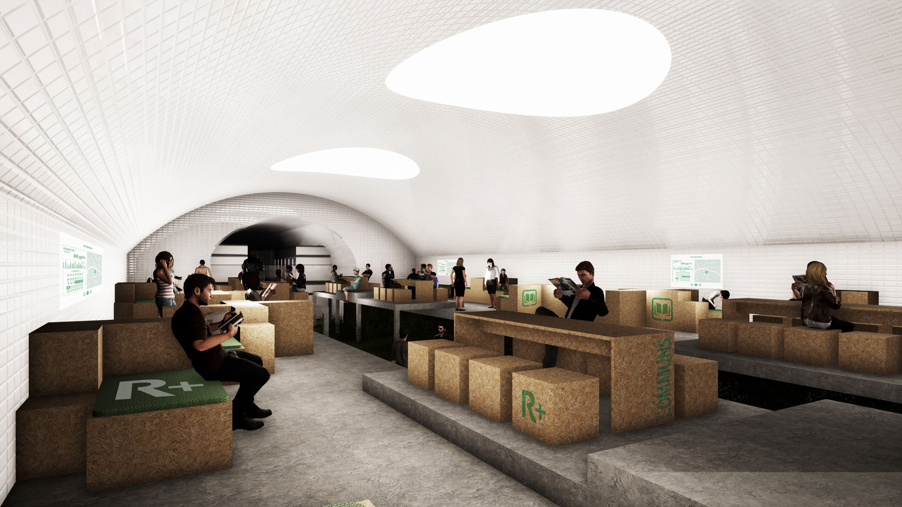
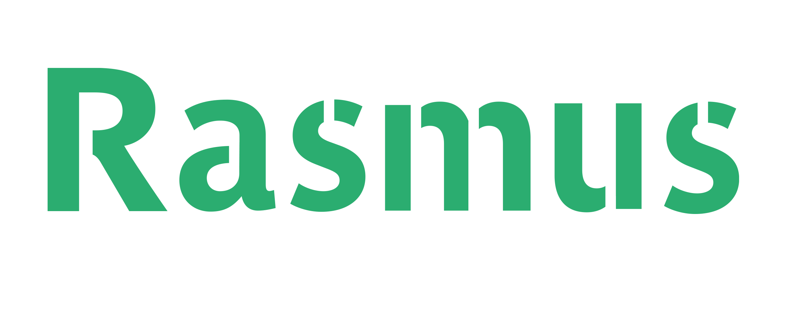
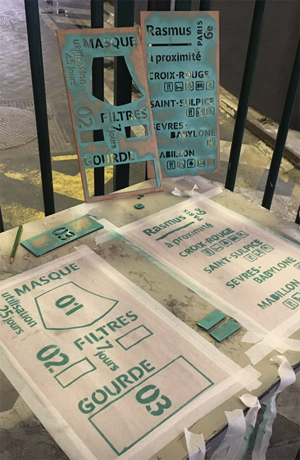

EN
Due to pollution coming from human activities and global warming, in 2050, the atmosphere becomes extremely dangerous for human’s health. Rasmus is a pur-air bunker set up in un-used Parisian metro station. The spaces are separated in areas : working, eating, resting, and in order to create independence with the outside world, even a food producing bunker.
The R+ Kit is sent to inhabitants at their Home, as a survival kit for the days spent outside of Rasmus areas. The packaging’s second aim is to inform them of the closest bunkers in their neighborhood with the functions specified.
In 2050, all Parisians will be implemented a RFID chip in their hand to replace today’s smartphone. Screen panels will be installed within the bunker where they will have access to all information stocked in their chips.
Rasmus 2020
FR
En 2050, à cause de la pollution issue des activités humaines et la réchauffement climatique, la qualité de l’air devient dangereuse pour la santé. Rasmus est un bunker d’air pur installé dans les stations fantômes parisiens. Les espaces sont séparés entre espaces privés intimes et communs ouverts.
Le kit R+ est envoyé en amont aux habitant : c’est un kit de survie à utiliser durant la vie en dehors du réseau Rasmus. Le packaging a une fonction instructive, elle nous informe des bunkers présents dans le quartier et leurs fonctionnalités.
En 2050, les smartphone des Parisiens seront remplacés par une puce dans la main. Des écrans tactiles seront à disposition afin d’avoir accès aux informations stockées sur cette dernière.
En 2050, à cause de la pollution issue des activités humaines et la réchauffement climatique, la qualité de l’air devient dangereuse pour la santé. Rasmus est un bunker d’air pur installé dans les stations fantômes parisiens. Les espaces sont séparés entre espaces privés intimes et communs ouverts.
Le kit R+ est envoyé en amont aux habitant : c’est un kit de survie à utiliser durant la vie en dehors du réseau Rasmus. Le packaging a une fonction instructive, elle nous informe des bunkers présents dans le quartier et leurs fonctionnalités.
En 2050, les smartphone des Parisiens seront remplacés par une puce dans la main. Des écrans tactiles seront à disposition afin d’avoir accès aux informations stockées sur cette dernière.



